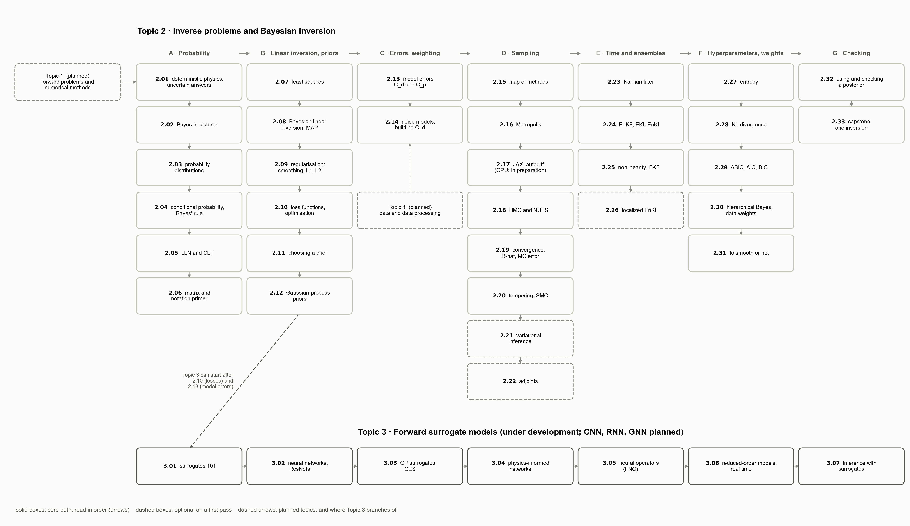

Empiricist Geophysics
Data, Models, and Bayesian Inference. Geophysical inverse problems, by picture and by computation.
The notebooks I keep to refresh my own thinking and to build my own map of how data, models and inference fit together
in geophysics, shared as an open course. Every idea on a small problem whose answer is known; every method actually
run; every figure from that run.
The notebooks were developed with Claude Opus 5.5 (Anthropic).
The course will continue to evolve as my understanding of the subject grows and changes.

Topic 1 · Geophysical forward problems and numerical methods planned
- Elastic dislocation models: point sources and finite faults in an elastic half-space (Okada 1985, 1992), triangular dislocations and layered Earth models; how the Green's-function matrix G of a slip inversion is built, and how its errors become the prediction covariance Cp (2.13).
- Numerical methods: finite-difference, finite-element and boundary-element methods; meshing a curved fault from a slab model; checking accuracy by mesh refinement.
- Earthquake cycle and postseismic processes: interseismic locking (backslip), rate-and-state and rate-strengthening friction, stress-driven afterslip (the forward model used in Topic 3), viscoelastic relaxation in Maxwell and Burgers materials, power-law flow laws, and poroelastic rebound.
- Tsunami modelling: from seafloor deformation to the initial sea surface (including the contribution of horizontal motion on sloping seafloor), the shallow-water equations, dispersion (Boussinesq equations), adaptive mesh refinement, and tsunami Green's functions.
- Seismic waves: the elastic wave equation, body and surface waves, synthetic seismograms, kinematic rupture models, and back projection of array recordings.
Topic 2 · Inverse problems and Bayesian inversion
A · Probability for inverse problems
B · Linear inversion, ill-posedness, priors
C · Errors and data weighting
D · Computing a posterior: sampling
E · Time-dependent and ensemble inversion
F · Hyperparameters and weights
G · Checking and synthesis
Topic 3 · Forward surrogate models under development
Topic 4 · Data and data processing planned
- GNSS: daily positions and velocities, high-rate GNSS displacement waveforms, reference frames, common-mode error, offsets, coloured noise (white, flicker and random walk; 2.14), and time-series models of postseismic motion.
- InSAR: interferograms, phase unwrapping, atmospheric and orbital errors, decimation, and time-series methods; Sentinel-1, ALOS-2 and NISAR.
- Seafloor and ocean observations: DART buoys; cabled seafloor networks such as S-net along the Japan Trench; ocean-bottom pressure and differential pressure gauges (DPG); GNSS-acoustic seafloor positioning; coastal tide gauges; and removing tides, instrument drift and non-tectonic signals.
- Satellite altimetry: SWOT wide-swath sea-surface height and conventional nadir altimeters, as tsunami observations.
- Seismic data: teleseismic body and surface waves, strong-motion accelerograms, instrument response, filtering and alignment.
- From data to Cd: noise models, correlated errors and data weighting for each data type (2.14, 2.30).
Also: the sampler playground (runs in the browser).
Code MIT, text and figures CC BY 4.0.